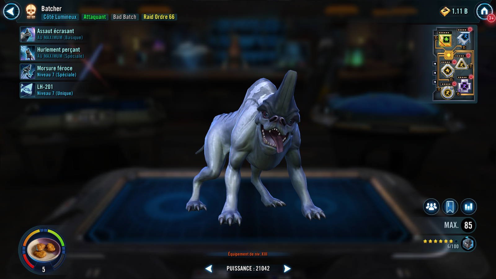
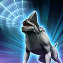
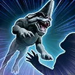

Batcher
A loyal lurca hound Attacker who tracks and pins down enemies.
A loyal lurca hound Attacker who tracks and pins down enemies.

Deal Physical damage to target enemy and gain Speed Up for 1 turn. During Batcher's turn, if the enemy was Marked, inflict Defense Down and 2 stacks of Off Balance for 1 turn.

All Bad Batch allies gain 30% Offense for 2 turns, dispel all buffs and inflict Marked on the target enemy for 2 turns, which can't be resisted. Inflict Ability Block on all enemies inflicted with Off Balance for 1 turn, and Offense Down on all enemies for 2 turns.

Deal Physical damage to target enemy and inflict Pinned for 2 turns, and 2 stacks of Bleed (max 6) until the end of the encounter, which can't be dispelled.
Bleed: -5% Speed and Tenacity, and lose 5% Health each turn; remove 1 stack when any Health is recovered
Omicron Boost : While in Territory Wars: Inflict an additional stack of Bleed (max 6) until the end of the encounter, which can't be dispelled, and Batcher assists herself. If another Bad Batch ally is inflicted with Captive, the cooldown of this ability is refreshed.
Batcher's damage can't be evaded, and she ignores Stealth and Taunt during her turn. While another Bad Batch ally is inflicted with Captive, Batcher has +50% Offense, +50 Speed, and Piercing Howl's cooldown is reduced by 1. Batcher assists herself whenever she uses a Special ability on her turn.